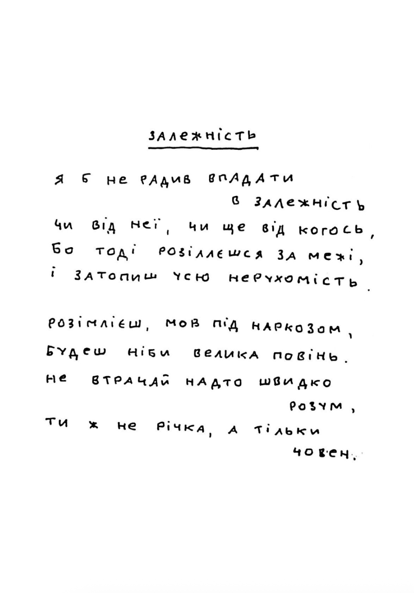
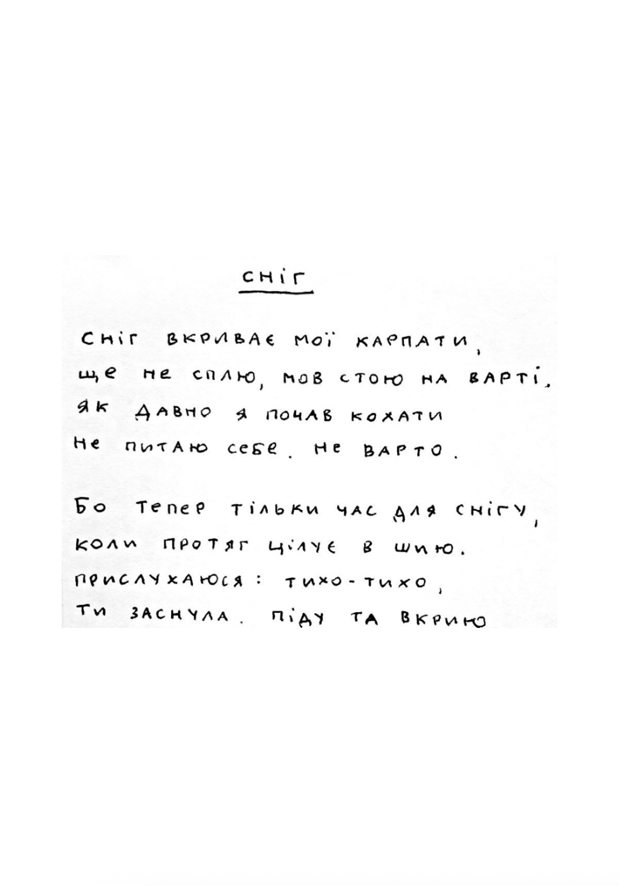
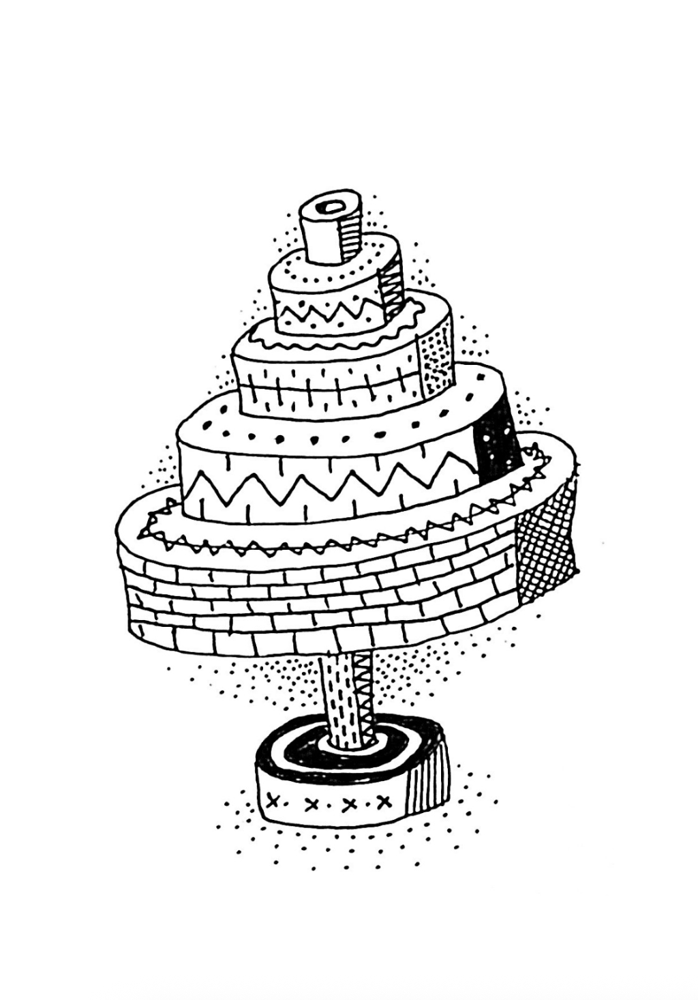
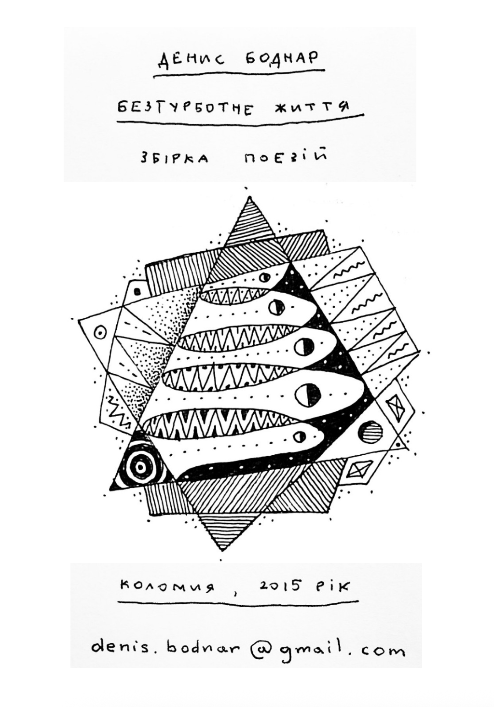
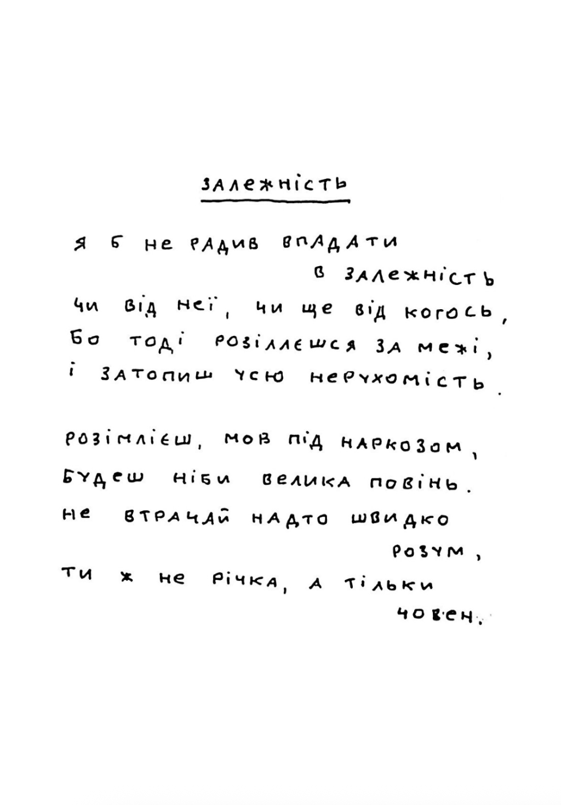
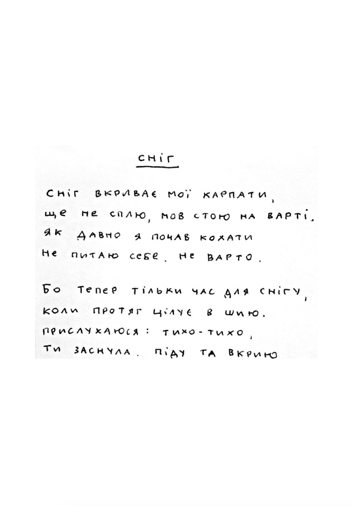
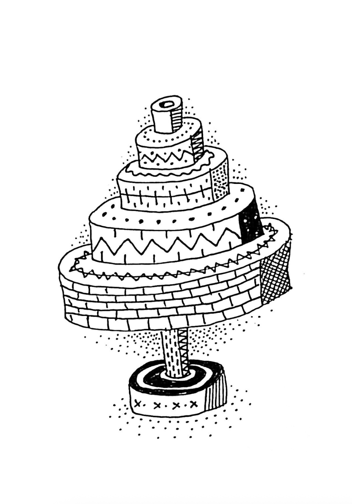
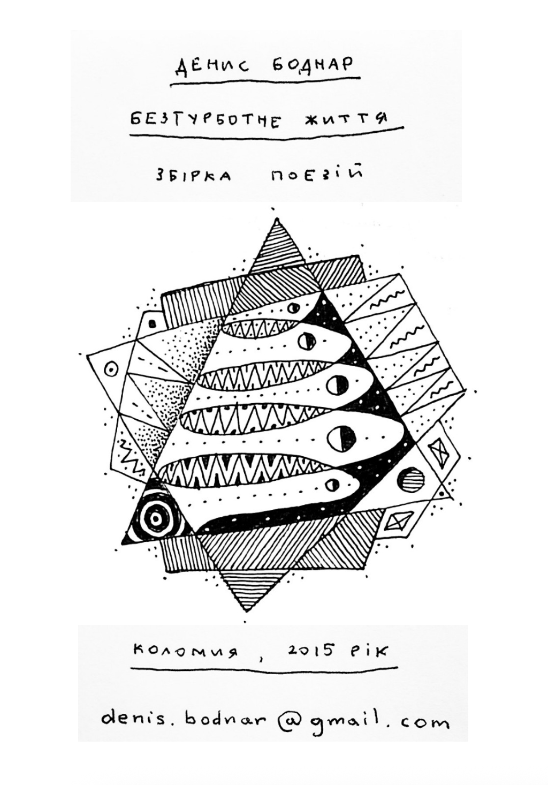
Це вірші, які я писав з 2013 по 2015 рік. Рукописна збірочка, надрукована на домашньому принтері. Примірників, які я власноруч надрукував у кількості сто штук більше немає, тому тут можна просто поглянути, якою вона була. 28 віршів, 32 сторінки.
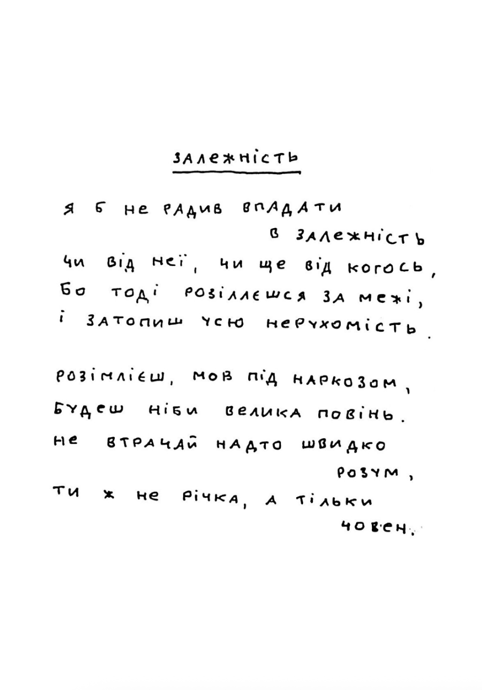
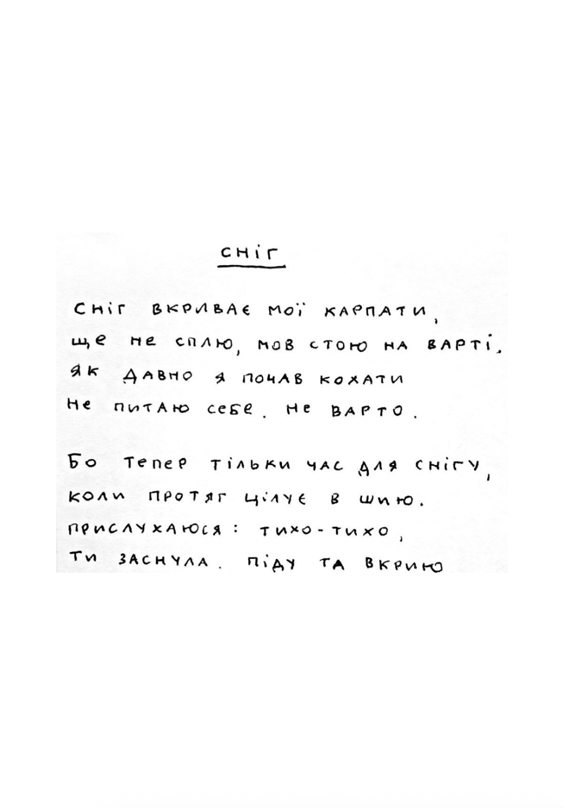
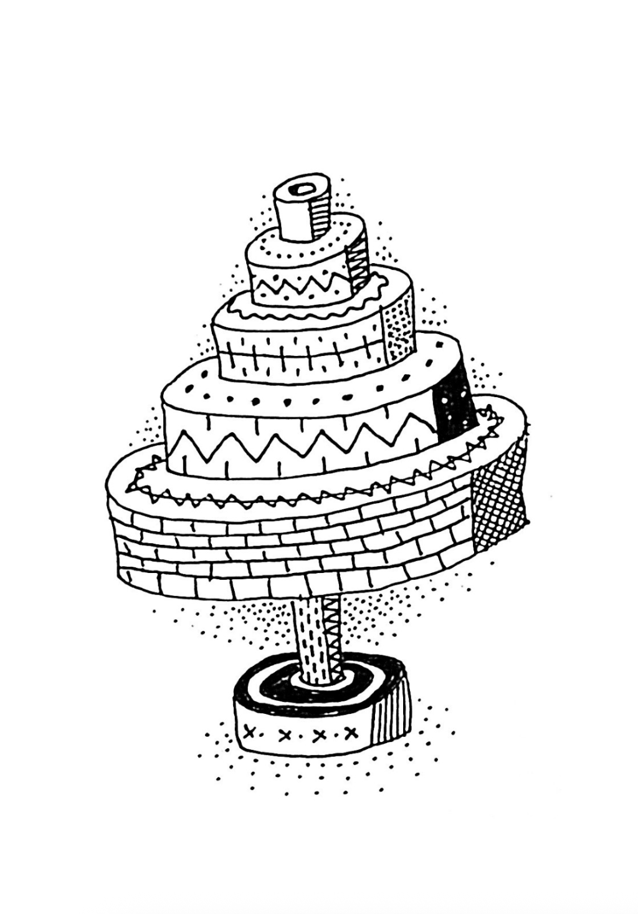
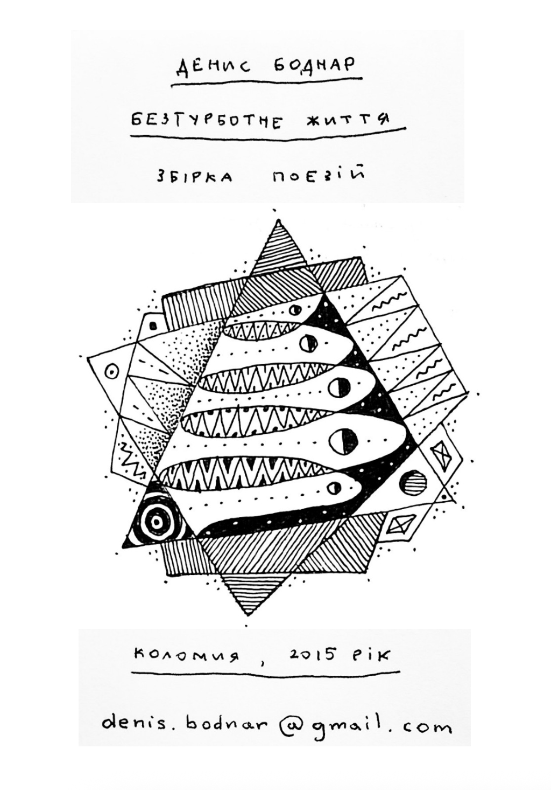
© Денис Боднар